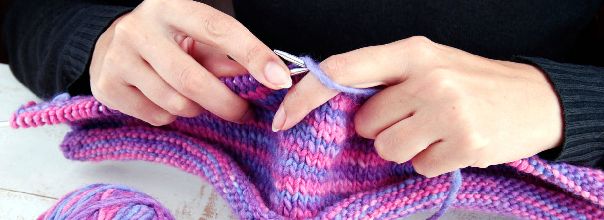

Kötéskor tűk és fonál segítségével dolgozunk. Készíthetünk ruhákat, anyagokat, takarókat, a lehetőségek
tárháza hatalmas.

Mi a különbség a kötés és a horgolás között?
Kötéskor fonallal dolgozunk, és legalább két tűre van szükségünk. A kötőtűk hegyesek és különböző
anyagokból készülhetnek - leggyakrabban bambuszból, klasszikus fából, alumíniumból, acélból vagy
karbonból. Valamennyi tűnek megvan a sajátos tulajdonsága, ennek köszönhetően többféle technikához is
használhatóak. A tűk vastagsága és hosszúsága különböző, vannak kör alakú tűk és olyan kötőtűk,
amelyeknek mindkét vége hegyes. A horgoláshoz csak fonalra és egy horgolótűre van szükség. A horgolótűk
vastagsága és hossza is különböző lehet.
A kötés során úgy dolgozunk, hogy az adott sor összes szemét egyszerre a kötőtűn kell tartani.
Horgolásnál viszont csak egy szemmel „dolgozunk aktívan“.
Kötéshez és horgoláshoz is használhatjuk ugyanazt a fonalat. Akkor ütközhetünk csak problémába, ha
cérnával szeretnénk dolgozni. Cérnával csak a horgolótű barátkozik.
A nehezebb dolga lehet kör- vagy henger formájú alakzatok kötése esetén – ehhez legalább három vagy öt
kötőtűt kell használni. A horgolás ilyen minták esetén sokkal jobb választás. Egyszerre csak egy
horgolótűre lesz szüksége.
Ha a kötés során „elszaladt” egy szem, akkor elveszik egy egész oszlop vagy sor, amelyek a szem alatt
találhatóak. A horgolásnak hatalmas előnye van ebben a tekintetben is. Az egyes sorok semmilyen módon
nem befolyásolják egymást, így nem fordulhat elő, hogy egy szem „elszalad“ és egy egész sor elveszik. Ez
egy jó hír a horgolás szerelmeseinek.